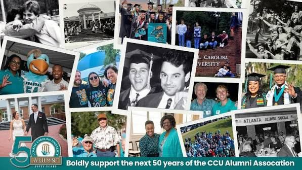

You can stay connected with Coastal Carolina University through the CCU Alumni Association, which is marking its 50th anniversary in 2026 and representing 48,882 Chanticleers globally.
Learn MoreCoastal Carolina University (CCU) Alumni Association has a busy schedule of upcoming fall 2026 events, highlighted by game-day TEALgates and the 50th-anniversary Homecoming celebration.
Learn MoreCoastal Carolina University's giving and "give-back" programs allow alumni, faculty, staff, students, and friends to support scholarships, campus programs, and local community initiatives.
Learn More
Being a Chanticleer does not end after graduation. Alumni can stay involved, meet other graduates, attend events, and remain connected to Coastal Carolina.
Alumni can stay connected with Coastal Carolina through alumni activities, events, and university updates.
Visit Alumni WebsiteAlumni events give graduates opportunities to reconnect with Coastal Carolina and meet other members of the Chanticleer community.
View Alumni InformationAlumni can support Coastal Carolina by giving back to the university and helping future Chanticleers.
Learn About GivingCoastal Carolina alumni are part of a community that continues beyond their college years. Staying involved can help graduates keep their Coastal Carolina connection.
Visit Alumni Website